couples forward and backward modes when
couples forward and backward modes when  ; coupled-mode theory gives peak reflectivity
; coupled-mode theory gives peak reflectivity  ; a quarter-wave phase shift opens a narrow transmission peak (the DFB laser cavity).
; a quarter-wave phase shift opens a narrow transmission peak (the DFB laser cavity).
Coupled-mode derivation
Forward
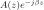
and backward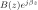
waves, coupling from the index modulation
from the index modulation  :
: 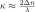
for a square-wave corrugation (Kogelnik and Shank 1972). With detuning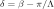
: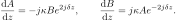
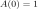
,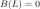
give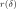
; at :
: 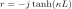
. Inside the stopband (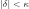
) waves decay — a 1D photonic band gap, the same physics as electron band gaps (Bloch).Worked example
SOI strip with 10 nm sidewall corrugation:
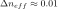
→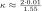
µm
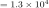
m. For 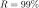
: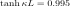
,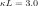
,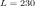
µm. Period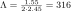
nm. Bandwidth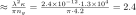
nm.Engineering applications
On-chip filters and mirrors, DFB and DBR laser cavities (laser diodes), fibre Bragg grating sensors and dispersion compensators, contra-directional couplers (add–drop filters without FSR), apodised gratings to suppress sidelobes.
Pitfall
Fabrication smooths small corrugations (lithography blurs features < 100 nm), so the realised is often much smaller than designed: measure and calibrate.